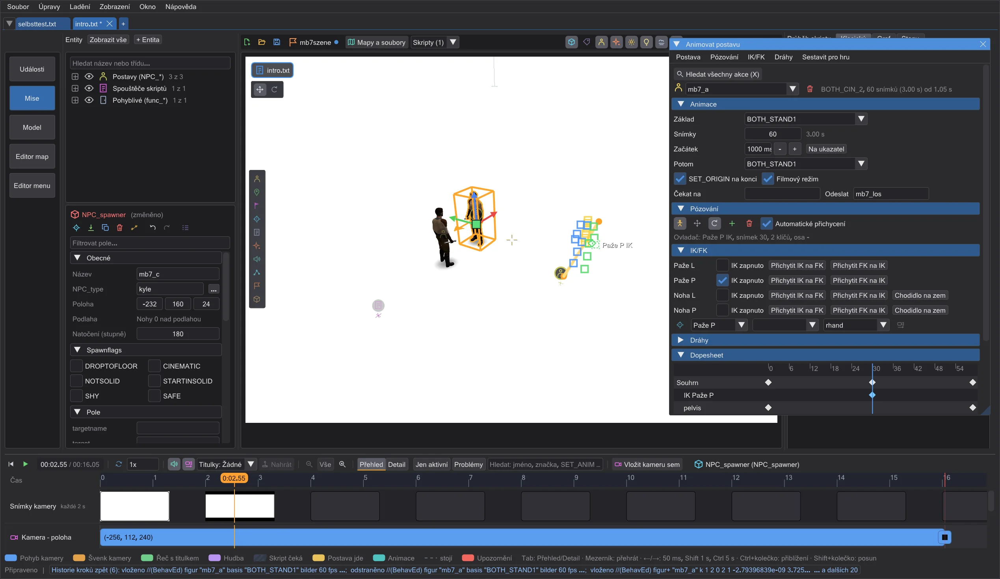
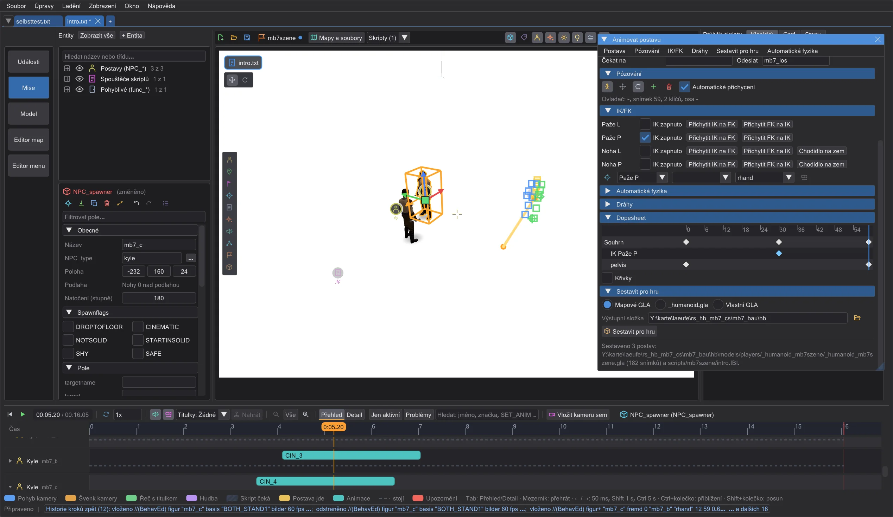
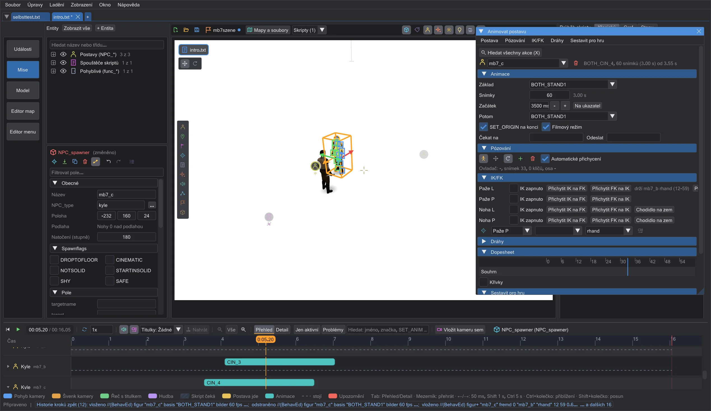

Karta Mission: animace postav
Pózujte postavu scény přímo na mapě stejným ovládáním jako v kartě Model, nechte dráhu její pánve být její cestou a sestavte mapové GLA, animation.cfg a skript ICARUS pro hru - pro jednu postavu nebo více, které na sebe čekají.

Jedna postava#
Vyberte postavu (NPC_spawner) a klepněte na Animovat postavu v inspektoru, v její nabídce pravého tlačítka nebo v okně Animovat postavu. Od časového ukazatele dostane postava vlastní animaci: vrstvu nad základní animací své kostry (Základ, např. BOTH_STAND1) s Snímky snímky, 20 za sekundu. Ovladače ovládacího rigu se objeví na postavě v mapě. Jako 3ds Max (výchozí): Q vybírá, W posouvá, E otáčí, F5/F6/F7 zamknou na X/Y/Z mapy, K nastaví klíč. Posun ruky nebo chodidla je IK - cíl se pohybuje v rovině pohledu; posun pánve hýbe celou postavou; otočení končetiny v IK se nejprve bez skoku přepne na FK (Automatické přichycení). Jako Blender: G a R modálně s X/Y/Z, klepnutí potvrdí, Esc zruší; I nastaví klíč. Chodidlo na zem postaví chodidlo na podlahu mapy, Cíl na plochu položí ruku na dveře, konzoli nebo libovolnou plochu, na kterou klepnete. Každé tažení je jeden krok zpět. Dopesheet v okně má řádek pro každou animovanou kost a každou končetinu IK; tažený klíč vezme klíče IK s klíči FK jejich řetězce. Všechny akce jsou také v nabídce okna, ve vyhledávání (X, v režimu Blenderu F3) a v pravém tlačítku na ovladači.
Kořenová dráha a SET_ORIGIN#
Žlutá čára v mapě je dráha pánve přes všechny snímky: cesta postavy. Tažením jednoho z jejích bodů posunete pánev v tom snímku. Ve hře se počátek NPC s animací nepohybuje - změřeno v Movie Duels a v původním JKA: bez SET_ORIGIN postava skočí zpět na začátek, jakmile začne další animace. Proto blok skriptu postavy končí příkazem SET_ORIGIN (začátek plus dráha pánve od posledního snímku k prvnímu snímku Potom) spolu s touto animací a postava zůstane, kde je. Vypnutím SET_ORIGIN na konci uvidíte skok v náhledu. Náhled vždy přehrává to, co dostane hra: každá změna znovu zapeče mapové GLA a pověsí je na kostru jako hra.
Sestavení pro hru#
Sestavit pro hru zapeče každou animovanou postavu skriptu do jejího slotu BOTH_CIN_n (50 v JKA, 125 v Movie Duels) a zapíše do výstupní složky: models/players/_humanoid_<mapa>/_humanoid_<mapa>.gla, její animation.cfg a skript jako .txt i .IBI. Mapové GLA, které už v datech hry existuje, se sloučí - jeho sloty zůstanou a postavy vezmou volné (plné mapové GLA se ohlásí). Cílové GLA se volí až teď: Mapové GLA (jen tato mapa), _humanoid.gla ve vlastní složce modu (každá mapa; nikdy do složky hry) nebo Vlastní GLA. Před zápisem se zkontrolují limity hry (snímky za koncem GLA, velikost animation.cfg, název v hlavičce, 53 kostí); nález se před sestavením zeptá. Blok skriptu každé postavy je SET_ANIM_BOTH se slotem, SET_ANIM_HOLDTIME_BOTH s její délkou, wait a SET_ORIGIN s následnou animací.

Více postav#
Každá postava má vlastní vrstvu a vlastní slot. Čekat na vloží před její animaci waitsignal, Odeslat po ní signal: druhá postava začne přesně ve chvíli, kdy první skončí, v náhledu stejně jako ve hře. Držet nechá cíl IK ruky nebo chodidla od časového ukazatele sledovat kost jiné animované postavy - úchop, předání, dvě postavy ruku v ruce. Zapeče se to do GLA držící postavy, takže hra ukáže totéž.
Nechte mezi postavami místo: NPC, který by se objevil uvnitř jiného těla (boxy se překrývají), se ve hře neobjeví. NPC_Begin to zkouší každých 500 ms (wait spawneru), dokud se místo neuvolní - affect na něj na začátku skriptu nikoho nenajde a vynechá se. Náhled to dělá stejně: postava se objeví až pak a její blok se nepřehraje.
